Kylian Mbappé , born on December 20, 1998, in Bondy, France, has quickly ascended the ranks of professional football to become one of the most promising and celebrated players of his generation. His journey from a young talent in the suburbs of Paris to a global football sensation is a testament to his exceptional talent, hard work, and dedication to the sport.
From an early age, Mbappé exhibited a natural affinity for football. His father, Wilfried Mbappé, who served as his coach, played a crucial role in nurturing his talent. At the age of six, Kylian joined the AS Bondy youth academy, where his skills and potential were noticed by scouts and coaches. His remarkable abilities and performances in the youth ranks led him to the prestigious AS Monaco academy in 2015.
Mbappé made his professional debut for AS Monaco at the age of 16, showcasing his immense talent and speed. His breakthrough season came during the 2016-2017 campaign, when he played an instrumental role in helping AS Monaco secure the Ligue 1 title. His exceptional speed, dribbling skills, and goal-scoring ability garnered attention from top clubs, leading to his high-profile transfer to Paris Saint-Germain (PSG) in 2018.
At PSG, Mbappé continued to impress, forming a lethal attacking trio with Neymar and Edinson Cavani. His contributions played a significant part in PSG's domestic successes, including multiple Ligue 1 titles, Coupe de France, and Coupe de la Ligue victories. He also played a crucial role in helping the team reach the UEFA Champions League final.
On the international stage, Mbappé's achievements are equally impressive. In the 2018 FIFA World Cup, he became a crucial part of the French national team, scoring four goals and assisting in their journey to lifting the prestigious trophy. His performances earned him the FIFA World Cup Best Young Player Award, highlighting his immense potential and prowess.
Kylian Mbappé's playing style is characterized by his remarkable speed, agility, and goal-scoring instincts. His ability to dribble past defenders with ease and execute clinical finishes make him a constant threat on the field. He can play various attacking roles and often utilizes his speed to exploit defensive vulnerabilities, creating numerous scoring opportunities for himself and his teammates.
Off the pitch, Mbappé is known for his humility, professionalism, and philanthropic efforts. He actively engages in charity work, supporting causes aimed at improving the lives of underprivileged children and promoting education. His actions off the field have further endeared him to fans, solidifying his reputation as a role model both within and beyond the realm of football.
In conclusion, Kylian Mbappé's journey from a talented youngster in the suburbs of Paris to a global football sensation is a testament to his extraordinary talent and dedication. As he continues to evolve and reach new heights in his career, the football world eagerly awaits to witness the incredible feats and accomplishments that this rising star is set to achieve in the years to come.
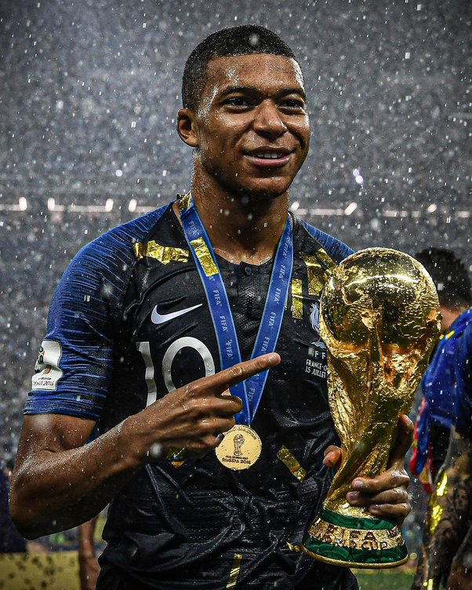
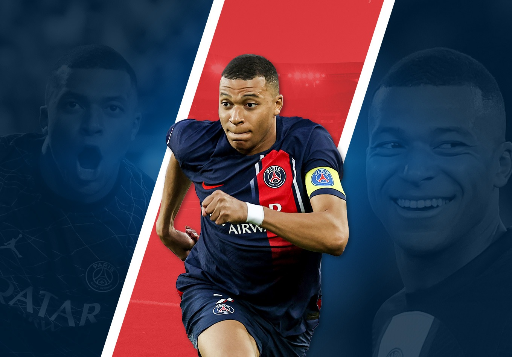
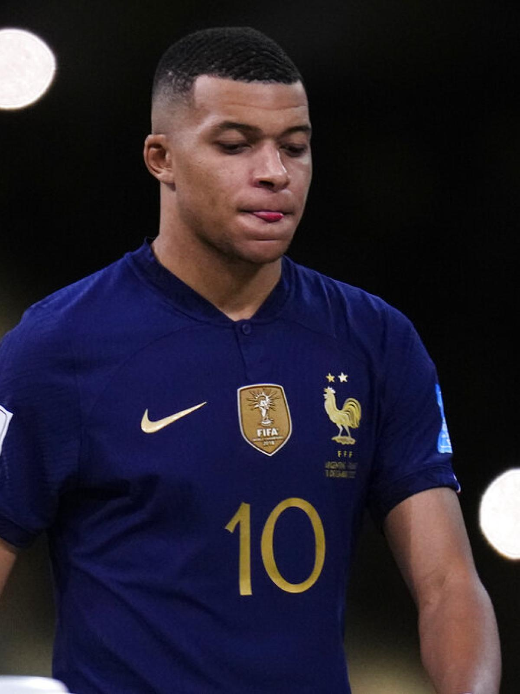
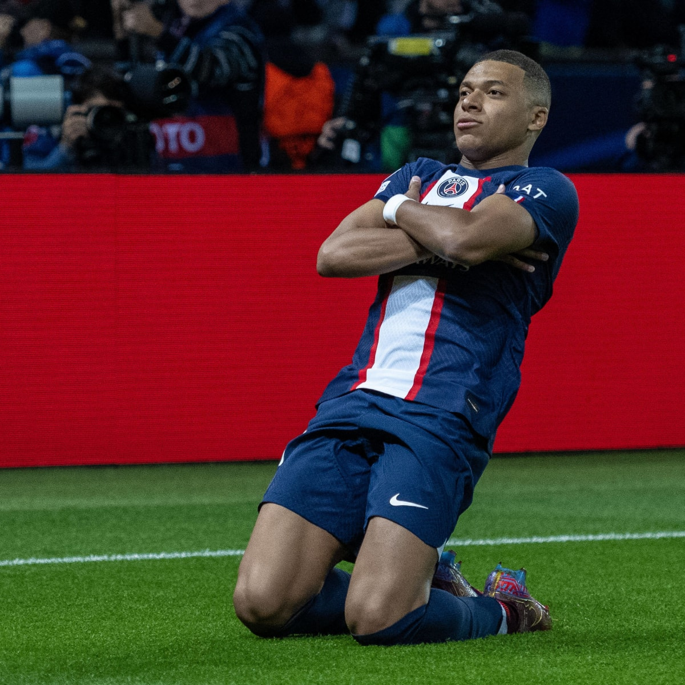
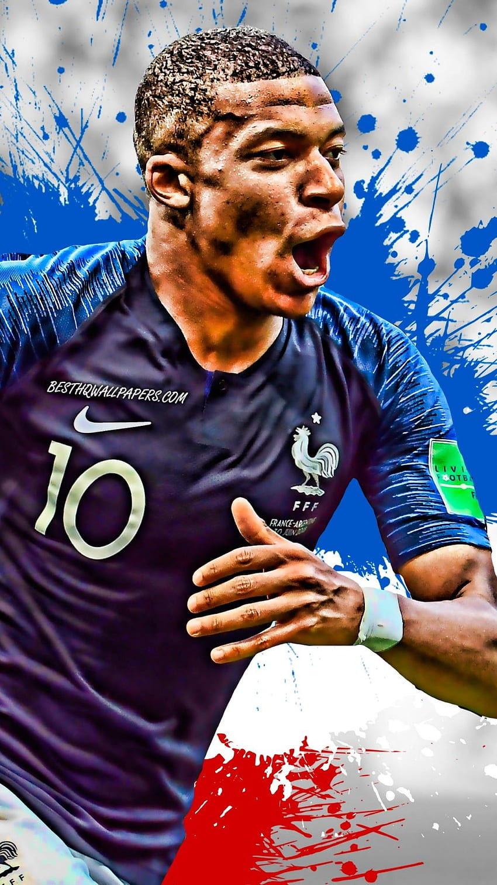
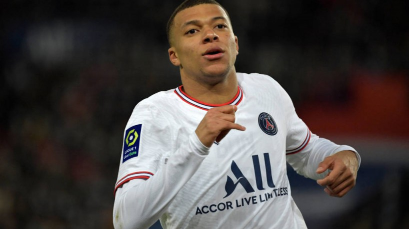
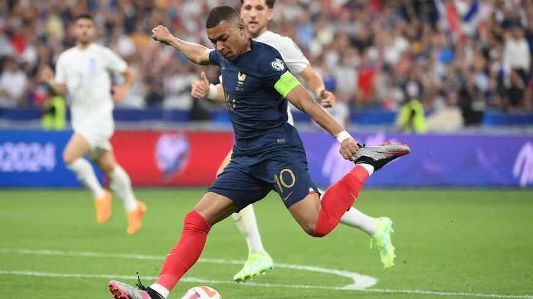
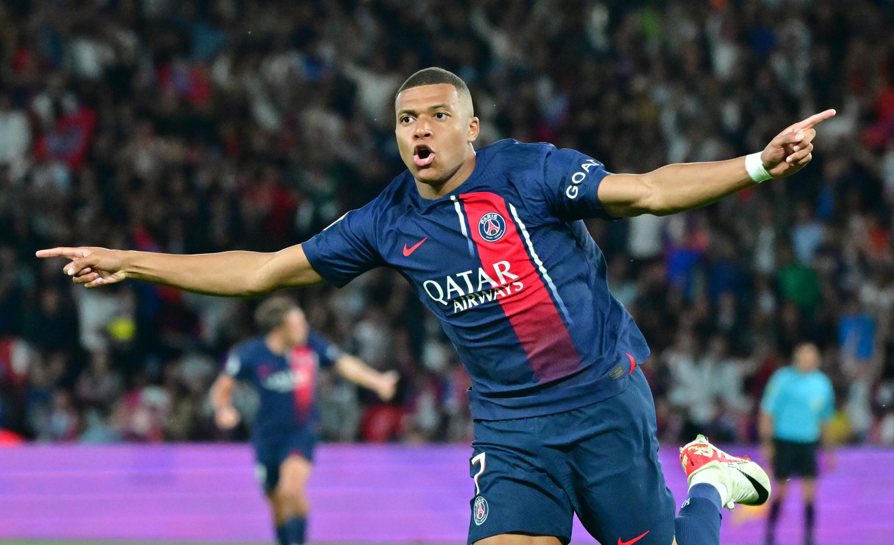
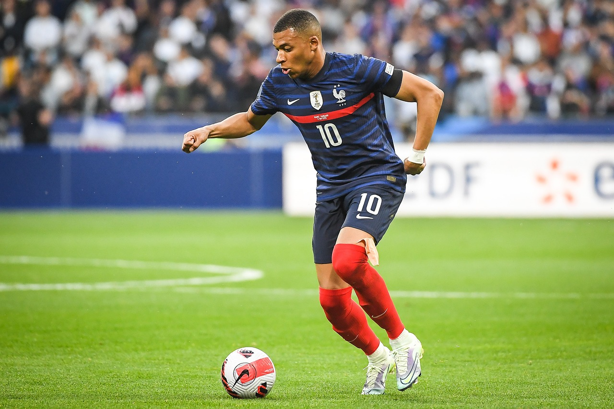
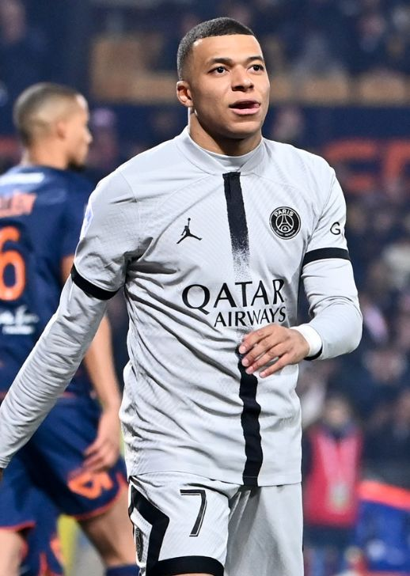
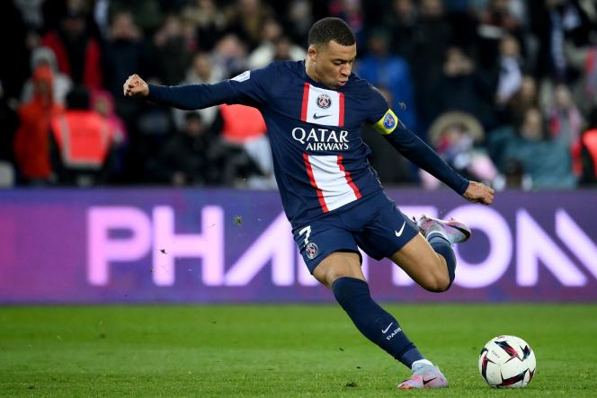
| Career |
| Years |
Team |
| 2015-2018 |
Monaco |
| 2018-Current Time |
Paris Saint-Germain |